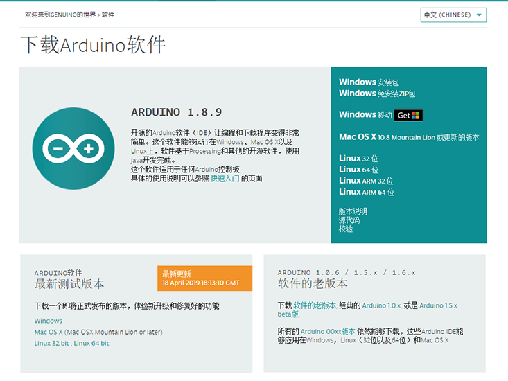

安装Arduino IDE¶
1.引言¶
欢迎来到Arduino！在您开始编程之旅之前，您需要设置软件
以编写您的电路板Arduino软件（IDE）允许您编写程序并将其上传到您的电路板。在Arduino Software页面中，您将找到两个选项：
如果您有可靠的Internet连接，则应使用在线IDE（Arduino Web Editor）。它允许您将草图保存在云中，从任何设备上获取它们并备份。您将始终拥有最新版本的IDE，而无需安装更新或社区生成的库。
如果您希望脱机工作，则应使用最新版本的 桌面IDE
Important
强烈建议安装桌面版IDE。当然，有机会你也可以尝试使用在线版IDE
2.下载¶
从下载页面获取最新版本。您可以选择安装程序（.exe）和Zip包。我们建议您使用第一个直接安装使用Arduino软件（IDE）所需的一切，包括驱动程序。使用Zip包，您需要手动安装驱动程序。如果要创建便携式安装，Zip文件也很有用 。 下载完成后，继续安装，当您从操作系统收到警告时，请允许驱动程序安装过程。
2.1 Arduino下载：¶


4.配置¶

4.1首选项配置¶
写软件之前，我们要配置一些东西（工作文件夹和语言等）
打开文件->首选项，更换目录。
可以更换语言，中英日德法，全部支持。
Note
默认会在C盘我的文档。因以后我们需要的很多拓展库都会默认生产在这个文件夹，所以我们最好把路径设在非系统盘中。
语言设置完之后，需要重启软件，才会生效。
Indices and tables¶
Search Page :numbered: